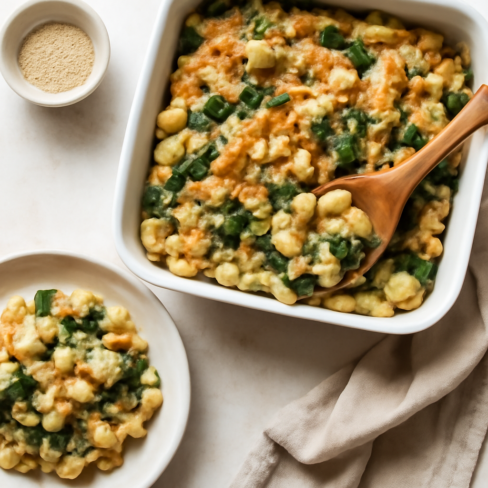

Friday — Chicken & Spinach Macaroni Bake

Cook Time: 40 minutes
Method: Oven
chickenmacaronibaked
Ingredients for 6
- 12 oz organic whole grain pasta
- 12 oz organic chicken breast (cooked & shredded)
- 2 cups organic spinach (fresh or frozen)
- 1 cup organic cheese
- 2 cups organic tomato sauce
- Salt to taste
Instructions
- Preheat oven to 375°F (190°C).
- Cook pasta as per package instructions, then mix with chicken, spinach, tomato sauce, and cheese.
- Transfer to a baking dish and bake for 25 minutes.
Toddler Notes
- Ensure pasta is well-cooked and soft.
- Cut chicken into small pieces and mix thoroughly.
← Back to weekly plan